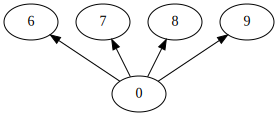

LoadPackage("num");trueNumericalSgps an introduction - SSC 2023Let \(S\) be a numerical semigroup. A pseudo-Frobenius number is an integer \(f\) such that \(f+S^*\subseteq S\). In particular, the Frobenius number of \(S\) is a pseudo-Frobenius number. The cardinality of the set of pseudo-Frobenius numbers of \(S\), \(\operatorname{FP}(S)\), is known as the type of \(S\).
The semigroup \(S\) induces the following ordering over the integers: \(a \le_S b\) if \(b-a\in S\). It easily follows that \[ \operatorname{PF}(S)= \operatorname{Maximals}_{\le_S}(\mathbb{N}\setminus S).\]
Is is not difficult to prove that for any \(n\in S\setminus\{0\}\), \[n+\operatorname{PF}(S)=\operatorname{Maximals}_{\le_S}(\operatorname{Ap}(S,n)).\]
The minimal elements in \(S\setminus\{0\}\) with respect to \(\le_S\) are precisely the minimal generators of \(S\).
Write a function that fiven a numerical semigroup \(S\) outputs the numerical semigroup \(S\cup\operatorname{PF}(S)\).
For every element \(n\in (S\cap[0,\operatorname{F}(S))\cup (\operatorname{PF}(S)\setminus\{\operatorname{F}(S)\})\), we have that \(\operatorname{F}(S)-n\) is a gap of \(S\). Thus \(\operatorname{n}(S)+\operatorname{t}(S)-1\le \operatorname{g}(S)\). By combining this with \(\operatorname{n}(S)+\operatorname{g}(S)=\operatorname{F}(S)+1\), we obtain \[ \operatorname{g}(S)\ge \frac{\operatorname{F}(S)+\operatorname{t}(S)}2. \]
Write a procedure that detects for which numerical semigroups, generated by four elements not larger than 50, the above inequality becomes an equality.
We have already seen that the embedding dimension of a numerical semigroup is always less than or equal to the multiplicity. We say that a numerical semigroup \(S\) has maximal embedding dimension if \(\operatorname{m}(S)=\operatorname{e}(S)\).
A numerical semigroup \(S\) is of maximal embedding dimension if and only if \((S\setminus\{0\})-\operatorname{m}(S)\) is a numerical semigroup, or equivalently, for any \(x,y\in S\) with \(x\ge y \ge \operatorname{m}(S)\), we have \(x+y-\operatorname{m}(S)\in S\).
It turns out that the intersecction of two maximal embedding dimension numerical semigroups is again of maximal embedding dimension, and thus we can think about a maximal embedding dimension closure.
It also makes sense to talk abot the minimal generators as a numerical semigroup with maximal embedding dimension. An element \(a\) in a numerical semigroup \(S\) with maximal embedding dimension, with \(a>\operatorname{m}(S)\), will be in that minimal MED generating system if and only if \(S\setminus\{a\}\) is again a numerical semigroup with maximal embedding dimension.
If \(S=\langle m=n_1< n_2< \dots < n_m\rangle\) is a numerical semigroup with maximal embedding dimension, then \(\operatorname{Ap}(S,m)=\{0, n_2, \dots, n_m\}\), and thus \(\operatorname{t}(S)=m-1\). It is not hard to prove that \(S\) has maximal embedding dimension if and only if it has maximal type.
rap:=HasseDiagramOfAperyListOfNumericalSemigroup(NumericalSemigroup([5..10]));
JupyterSplashDot(DotBinaryRelation(rap));
A particular class of numerical semigroups with maximal embedding dimension is that of Arf numerical semigroups. A numerical semigroup \(S\) if Arf if for any \(x,y,z\in S\), with \(x\ge y\ge z\), one gets \(x+y-z\in S\). Clearly, the intersection of two Arf numerical semigroups is again an Arf numerical semigroup.
We say that a numerical semigroup \(S\) is irreducible if it cannot be expressed as the intersection of two numerical semigroups properly containing it.
It can be (easily) shown that if we fix a positive integer \(f\), then \(S\) is irreducible if and only if it is maximal (with respect to inclusion) in the set of all numerical semigroups with Frobenius number \(f\) (or equivalently, in the set of all numerical semigroups not containing \(f\)).
Recall that \(\operatorname{g}(S)\ge (\operatorname{F}(S)+1)/2\). Having less genus means being “bigger”, and so if \(\operatorname{F}(S)\) is odd, then \(S\) is irreducible if and only if \(\operatorname{g}(S)= (\operatorname{F}(S)+1)/2\).
For \(\operatorname{F}(S)\) even, we obtain that \(S\) is irreducible if and only if \(\operatorname{g}(S)=(\operatorname{F}(S)+2)/2\).
Every numerical semigroup can be expressed as a finite intersection of irreducible numerical semigroups. Two minimal (non-redundant) expressions of the semigroup as intersection of irreducible numerical semigroup may have different factors.
[ Numerical semigroup with 2 generators, Numerical semigroup with 3 generators ]Notice also that for every integer \(x\), both \(x\) and \(\operatorname{F}(S)-x\) cannot be in \(S\) (since otherwise their sum, which is \(\operatorname{F}(S)\), would be in \(S\)). If we want \(S\) to have the least possible number of gaps once the Frobenius number is fixed, then we do not want \(x\) and \(\operatorname{F}(S)-x\) to be gaps at the same time (unless they are the same and then \(x=\operatorname{F}(S)/2\)).
Assume that \(\operatorname{F}(S)\) is odd. Then we say that \(S\) is symmetric if for any integer \(x\not\in S\), we have that \(\operatorname{F}(S)-x\in S\). A numerical semigroup with odd Frobenius number is irreducible if and only if it is symmetric.
For the case \(\operatorname{F}(S)\) even, we have to take into account \(\operatorname{F}(S)/2\). A numerical semigroup \(S\) is pseudo-symmetric if \(\operatorname{F}(S)\) is even and for any integer \(x\) not in \(S\) and different from \(\operatorname{F}(S)/2\), we have that \(\operatorname{F}(S)-x\in S\). A numerical semigroup with even Frobenius number is irreducible if and only if it is pseudo-symmetric.
[ Numerical semigroup, Numerical semigroup, Numerical semigroup, Numerical semigroup, Numerical semigroup, Numerical semigroup, Numerical semigroup, Numerical semigroup ][ Numerical semigroup, Numerical semigroup, Numerical semigroup, Numerical semigroup, Numerical semigroup, Numerical semigroup ]Symmetric numerical semigroups correspond with those numerical semigroups of type one, while \(S\) is pseudo-symmetric if and only if \(\operatorname{PF}(S)=\{\operatorname{F}(S)/2, \operatorname{F}(S)\}\). As we have seen above, there are numerical semigroups with type two that are not pseudo-symmetric.
[ [ 1, 1 ], [ 2, 1 ], [ 3, 1 ], [ 4, 1 ], [ 5, 2 ], [ 6, 1 ], [ 7, 3 ], [ 8, 2 ], [ 9, 3 ], [ 10, 3 ], [ 11, 6 ], [ 12, 2 ], [ 13, 8 ], [ 14, 6 ], [ 15, 7 ], [ 16, 7 ], [ 17, 15 ], [ 18, 7 ], [ 19, 20 ], [ 20, 11 ], [ 21, 18 ], [ 22, 20 ], [ 23, 36 ], [ 24, 14 ], [ 25, 44 ], [ 26, 35 ], [ 27, 45 ], [ 28, 37 ], [ 29, 83 ], [ 30, 36 ], [ 31, 109 ], [ 32, 70 ], [ 33, 101 ], [ 34, 106 ], [ 35, 174 ], [ 36, 77 ], [ 37, 246 ], [ 38, 182 ], [ 39, 227 ], [ 40, 196 ] ]Find examples of numerical semigroups with type two that are not pseudo-symmetric.
Recall that for a numerical semigroup \(S\), \(\operatorname{g}(S)\ge (\operatorname{F}(S)+\operatorname{t}(S))/2\). We say that \(S\) is almost symmetric if \(\operatorname{g}(S)= (\operatorname{F}(S)+\operatorname{t}(S))/2\). Consequently, these are numerical semigroups maximal with respect to inclusion once the type and the Frobenius number are fixed.
Clearly, every irreducible numerical semigroup is almost symmetric.
[ Numerical semigroup, Numerical semigroup, Numerical semigroup, Numerical semigroup ][ [ 1, 1 ], [ 2, 1 ], [ 3, 2 ], [ 4, 2 ], [ 5, 4 ], [ 6, 3 ], [ 7, 7 ], [ 8, 6 ], [ 9, 11 ], [ 10, 9 ], [ 11, 20 ], [ 12, 15 ], [ 13, 32 ], [ 14, 24 ], [ 15, 47 ], [ 16, 42 ], [ 17, 83 ], [ 18, 58 ], [ 19, 131 ], [ 20, 103 ], [ 21, 188 ], [ 22, 151 ], [ 23, 323 ], [ 24, 241 ], [ 25, 494 ], [ 26, 364 ], [ 27, 718 ], [ 28, 605 ], [ 29, 1192 ], [ 30, 821 ], [ 31, 1827 ], [ 32, 1441 ], [ 33, 2599 ], [ 34, 2034 ], [ 35, 4243 ] ][ [ 1, 1 ], [ 2, 2 ], [ 3, 3 ], [ 4, 6 ], [ 5, 9 ], [ 6, 15 ], [ 7, 24 ], [ 8, 42 ], [ 9, 58 ], [ 10, 103 ], [ 11, 151 ], [ 12, 241 ], [ 13, 364 ], [ 14, 605 ], [ 15, 821 ], [ 16, 1441 ], [ 17, 2034 ], [ 18, 3172 ], [ 19, 4725 ], [ 20, 7694 ] ]Will this function increse as the Frobenius number increases?
There are many other generalizations of symmetry.